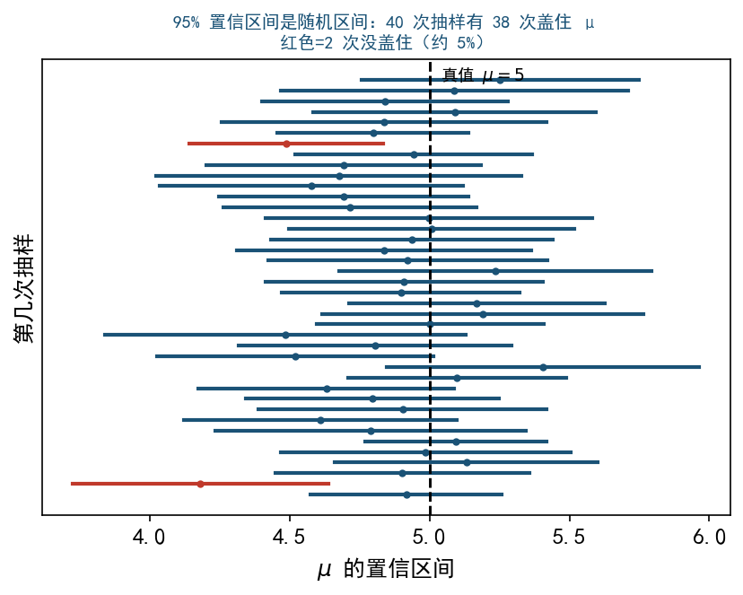

对未知参数 $\theta$ 构造统计量 $\underline\theta, \bar\theta$（仅依赖样本），使
$$P(\underline\theta\leq\theta\leq\bar\theta)\geq 1-\alpha$$$[\underline\theta, \bar\theta]$ 称为 $\theta$ 的置信水平 $1-\alpha$ 的置信区间。$\alpha$ 是显著性水平（一般 0.05 或 0.01）。

情形 1：$\sigma^2$ 已知
枢轴量 $U = \dfrac{\bar X-\mu}{\sigma/\sqrt n}\sim N(0, 1)$：
$$\left[\bar X-u_{\alpha/2}\dfrac{\sigma}{\sqrt n},\;\bar X+u_{\alpha/2}\dfrac{\sigma}{\sqrt n}\right]$$情形 2：$\sigma^2$ 未知（更常见）
枢轴量 $T = \dfrac{\bar X-\mu}{S/\sqrt n}\sim t(n-1)$：
$$\left[\bar X-t_{\alpha/2}(n-1)\dfrac{S}{\sqrt n},\;\bar X+t_{\alpha/2}(n-1)\dfrac{S}{\sqrt n}\right]$$$\mu$ 已知：枢轴量 $\chi^2 = \dfrac{1}{\sigma^2}\sum(X_i-\mu)^2\sim\chi^2(n)$：
$$\left[\dfrac{\sum(X_i-\mu)^2}{\chi^2_{\alpha/2}(n)},\;\dfrac{\sum(X_i-\mu)^2}{\chi^2_{1-\alpha/2}(n)}\right]$$$\mu$ 未知（更常见）：$\chi^2 = \dfrac{(n-1)S^2}{\sigma^2}\sim\chi^2(n-1)$：
$$\left[\dfrac{(n-1)S^2}{\chi^2_{\alpha/2}(n-1)},\;\dfrac{(n-1)S^2}{\chi^2_{1-\alpha/2}(n-1)}\right]$$注意 $\chi^2$ 不对称，上下分位数不同。
$t_{0.025}(15) = 2.131$。半宽 $= 2.131\cdot\dfrac{0.017}{\sqrt{16}} = 0.00906$。
区间 $[2.125-0.00906, 2.125+0.00906] = [2.116, 2.134]$。
单侧上限：$P(\theta\leq\bar\theta)\geq 1-\alpha$，用分位数 $u_\alpha$（不是 $u_{\alpha/2}$！）。
例：$N(\mu, \sigma^2)$，$\sigma^2$ 未知，$\mu$ 的单侧上限
$$\bar\mu = \bar X+t_\alpha(n-1)\dfrac{S}{\sqrt n}$$单侧置信区间 $(-\infty, \bar\mu)$。
| 估计 | 条件 | 枢轴量 |
|---|---|---|
| $\mu$ | $\sigma^2$ 已知 | $(\bar X-\mu)/(\sigma/\sqrt n)\sim N(0,1)$ |
| $\mu$ | $\sigma^2$ 未知 | $(\bar X-\mu)/(S/\sqrt n)\sim t(n-1)$ |
| $\sigma^2$ | $\mu$ 未知 | $(n-1)S^2/\sigma^2\sim\chi^2(n-1)$ |
| $\sigma^2$ | $\mu$ 已知 | $\sum(X_i-\mu)^2/\sigma^2\sim\chi^2(n)$ |
| $\mu_1-\mu_2$ | $\sigma$ 已知 | $\sim N$ |
| $\mu_1-\mu_2$ | $\sigma$ 未知同方差 | 合并方差 $S_w$，$\sim t(n_1+n_2-2)$ |
| $\sigma_1^2/\sigma_2^2$ | — | $\sim F(n_1-1, n_2-1)$ |